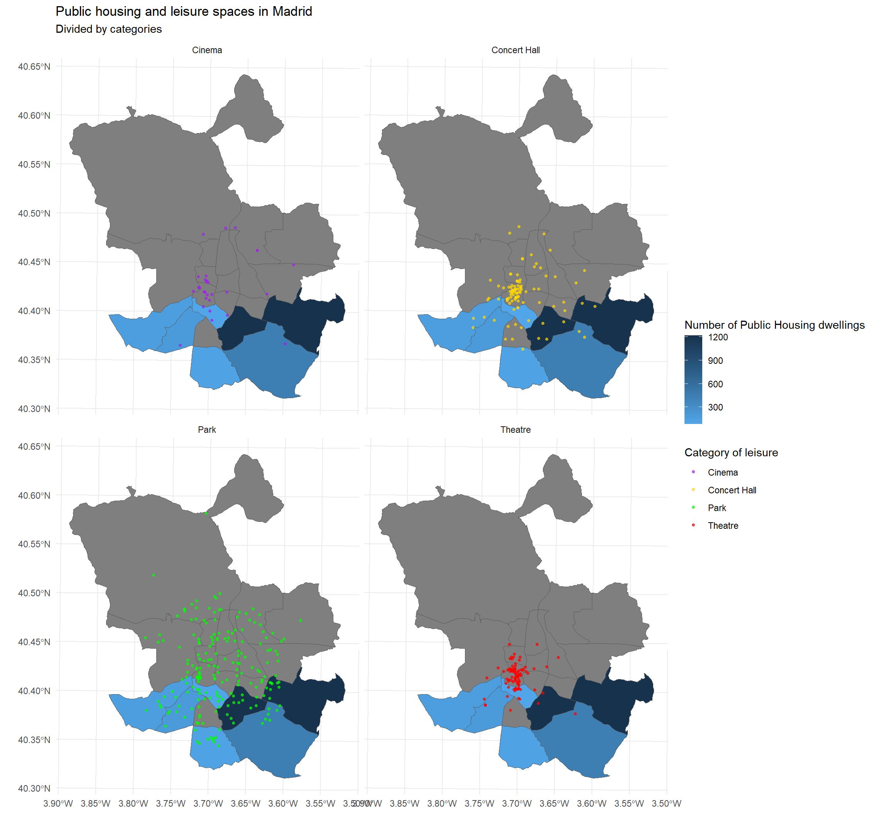

This project aims to analyze the spatial distribution of public housing and leisure spaces in Madrid using data harvesting techniques.
In this study, we aim to leverage techniques acquired in the data harvesting course, such as web scraping, the utilization of Selenium, and API operation, to investigate the spatial distribution of public housing in the city of Madrid. Specifically, we seek to examine their location concerning leisure spaces such as cinemas, theaters, art galleries, and parks.
The first step is loading the following libraries. Before running the code, ensure they are installed in your computer:
Configuring the user-agent of the web browser is advisable, as it helps identify your scraping bot as a legitimate user agent and can assist in performing ethical web scraping. You can find out your user agent by typing “what is my user agent” into your browser. Additionally, adding your name and email address can further identify yourself and establish transparency in your scraping activities.
set_config(
user_agent("Mozilla/5.0 (Windows NT 10.0; Win64; x64; rv:123.0) Gecko/20100101 Firefox/123.0; Candela Gomez / 100516517@alumnos.uc3m.es"))Our first objective is to map the public housing in the municipality of Madrid. To achieve this, we will conduct web scraping on the website of the Empresa Municipal de la Vivienda y Suelo, a local public entity responsible for managing public housing in the city of Madrid.
We wanted to extract the number of dwellings and the district in which each housing development is located. The website distinguishes between completed or under-construction housing. In our work, we have decided to consider both. To extract this information, it was necessary to click on each housing development, thus requiring the use of Selenium.
# Initiate a remote Selenium client
driver <- rsDriver(browser = "firefox",
port = 4421L) #you may need to change the port if it is already in use[1] "Connecting to remote server"
$acceptInsecureCerts
[1] FALSE
$browserName
[1] "firefox"
$browserVersion
[1] "123.0.1"
$`moz:accessibilityChecks`
[1] FALSE
$`moz:buildID`
[1] "20240304104836"
$`moz:geckodriverVersion`
[1] "0.34.0"
$`moz:headless`
[1] FALSE
$`moz:platformVersion`
[1] "10.0"
$`moz:processID`
[1] 6204
$`moz:profile`
[1] "C:\\Users\\gbcan\\AppData\\Local\\Temp\\rust_mozprofilenmkAzp"
$`moz:shutdownTimeout`
[1] 60000
$`moz:webdriverClick`
[1] TRUE
$`moz:windowless`
[1] FALSE
$pageLoadStrategy
[1] "normal"
$platformName
[1] "windows"
$proxy
named list()
$setWindowRect
[1] TRUE
$strictFileInteractability
[1] FALSE
$timeouts
$timeouts$implicit
[1] 0
$timeouts$pageLoad
[1] 300000
$timeouts$script
[1] 30000
$unhandledPromptBehavior
[1] "dismiss and notify"
$webdriver.remote.sessionid
[1] "cf371474-3262-4e67-be01-94a182fef876"
$id
[1] "cf371474-3262-4e67-be01-94a182fef876"remDr <- driver$client
url <- "https://www.emvs.es/Proyectos/Promociones"
# CAREFUL: A WARNING MIGHT APPEAR IN MOZILLA FIREFOX
# Navigate to the website
remDr$navigate(url)
# Deny cookies
url |>
read_html() |>
xml_find_all("(//div[@id = 'Cookies']//button[@onclick = 'rechazaCookies()'])"){xml_nodeset (1)}
[1] <button type="button" onclick="rechazaCookies()">Denegar todas< ...# Click deny cookies:
remDr$findElement(value="(//div[@id = 'Cookies']//button[@onclick = 'rechazaCookies()'])")$clickElement()
# Extract the link for the first housing development
url |>
read_html() |>
xml_find_all("(//div[@class = 'even4 nopadding']//a)[1]"){xml_nodeset (1)}
[1] <a href="/Proyectos/Promociones/Paginas/NSA2.aspx">\r\n ...# Relocate it in RSelenium and click on it:
remDr$findElement(value="(//div[@class = 'even4 nopadding']//a)[1]")$clickElement()
# Retrieve the HTML source code of the webpage and parses it into a structured format for further processing
page_source <- remDr$getPageSource()[[1]]
html_code <-
page_source %>%
read_html()Now, we extract the district and the number of dwellings for the first housing:
# Extract the district for the selected housing:
first_district <-
html_code %>%
xml_find_all("//header[@class='ancho70 ftr']//div[@class='subtitle']//p") %>%
xml_text() |>
str_extract("^.+?\\.") |>
str_replace("\\.", "")
first_district[1] "Puente de Vallecas"# Extract number of dwellings for the selected housing:
first_number <-
html_code %>%
xml_find_all("//header[@class='ancho70 ftr']//span") %>%
xml_text() |>
str_extract("\\d+")
first_number[1] "85"# Create a tibble
first_final_res <- tibble(number = first_number, district = first_district)
first_final_res# A tibble: 1 × 2
number district
<chr> <chr>
1 85 Puente de Vallecas# Go back
remDr$goBack()Once we have identified the path for extracting the required information, we define a function to automate the extraction of the district and number of dwellings for every housing development. We finally organize it in a data frame.
collect_categories <- function(page_source) {
# Read source code of the website
html_code <-
page_source %>%
read_html()
# Extract neighborhood
district <-
html_code %>%
xml_find_all("//header[@class='ancho70 ftr']//div[@class='subtitle']//p") %>%
xml_text() |>
str_extract("^.+?\\.") |>
str_replace("\\.", "")
# Extract number
number <-
html_code %>%
xml_find_all("//header[@class='ancho70 ftr']//span") %>%
xml_text() |>
str_extract("\\d+")
# Collect everything in a data frame
final_res <- tibble(number = number, district = district)
final_res
}
# Get number of places on this page
num <-
url %>%
read_html() %>%
xml_find_all("(//div[@class = 'even4 nopadding']//a)") %>%
length()
posts <- list()
# Loop over each place, extract the categories and go back to the main page
for (i in seq_len(num)) {
print(i)
# Go to the next place
xpath <- paste0("(//div[@class = 'even4 nopadding']//a)[", i, "]")
Sys.sleep(2)
remDr$findElement(value = xpath)$clickElement()
# Get the source code
page_source <- remDr$getPageSource()[[1]]
# Grab all categories
posts[[i]] <- collect_categories(page_source)
# Go back to the main page before next iteration
remDr$goBack()
}[1] 1
[1] 2
[1] 3
[1] 4
[1] 5
[1] 6
[1] 7
[1] 8
[1] 9
[1] 10
[1] 11
[1] 12
[1] 13
[1] 14
[1] 15
[1] 16
[1] 17
[1] 18
[1] 19
[1] 20
[1] 21
[1] 22
[1] 23
[1] 24
[1] 25
[1] 26
[1] 27
[1] 28
[1] 29
[1] 30
[1] 31
[1] 32
[1] 33
[1] 34
[1] 35
[1] 36
[1] 37
[1] 38
[1] 39
[1] 40
[1] 41
[1] 42# Combine results
combined_df <- bind_rows(posts)
combined_df# A tibble: 41 × 2
number district
<chr> <chr>
1 85 Puente de Vallecas
2 87 Latina
3 9 Puente de Vallecas
4 19 Puente de Vallecas
5 25 Carabanchel
6 72 Villa de Vallecas
7 61 Puente de Vallecas
8 15 Puente de Vallecas
9 101 Puente de Vallecas
10 100 Puente de Vallecas
# ℹ 31 more rowscombined_df$number <- as.numeric(combined_df$number)
# Group the dataframe by districts
summarized_df <- combined_df %>%
group_by(district) %>%
summarise(total_number = sum(number, na.rm = TRUE))
summarized_df# A tibble: 7 × 2
district total_number
<chr> <dbl>
1 Arganzuela 85
2 Carabanchel 184
3 Latina 154
4 Puente de Vallecas 1215
5 Vicálvaro 1212
6 Villa de Vallecas 453
7 Villaverde 120# Close browser and server
remDr$close()
driver$server$stop()[1] TRUENow, we want to obtain data about the distribution of leisure spaces, for this, the Ayuntamiento de Madrid’s Datos Abiertos API is useful. This API gives the developer access to data about the city. In our case we will obtain the data from four different endpoints, each one dedicated to spots of leisure: theaters, concert halls, cinemas and parks. We won’t need an API key to use this API, we can ask for the information directly.
Let’s start with theaters. We will request the information, treat the data in JSON format and store the latitude and longitude data. Lastly, we will assign to all observations the category to which the data belongs, in order to perform the data visualization subsequently.
theaters <- "https://datos.madrid.es/egob/catalogo/208862-7650046-ocio_salas.json"
reqtheaters <- request(theaters)
reqtheaters
resp_theaters <- reqtheaters %>%
req_perform()
resp_theaters
json_theaters <- resp_theaters %>%
resp_body_json(simplifyVector=TRUE)
tibble_theaters <- as_tibble(json_theaters$`@graph`)
glimpse(tibble_theaters)Rows: 97
Columns: 8
$ `@id` <chr> "https://datos.madrid.es/egob/catalogo/tipo/ent…
$ `@type` <chr> "https://datos.madrid.es/egob/kos/entidadesYorg…
$ id <chr> "10511835", "7869361", "11742393", "10037757", …
$ title <chr> "Café Teatro Serendipia", "DT Espacio Escénico"…
$ relation <chr> "http://www.madrid.es/sites/v/index.jsp?vgnextc…
$ address <df[,5]> <data.frame[23 x 5]>
$ location <df[,2]> <data.frame[23 x 2]>
$ organization <df[,5]> <data.frame[23 x 5]>We continue with Cinemas and film archives
cinemas <- "https://datos.madrid.es/egob/catalogo/208862-7650164-ocio_salas.json"
reqcinemas <- request(cinemas)
reqcinemas
resp_cinemas <- reqcinemas %>%
req_perform()
resp_cinemas
json_cinemas <- resp_cinemas %>%
resp_body_json(simplifyVector=TRUE)
tibble_cinemas <- as_tibble(json_cinemas$`@graph`)
glimpse(tibble_cinemas)Rows: 31
Columns: 8
$ `@id` <chr> "https://datos.madrid.es/egob/catalogo/tipo/ent…
$ `@type` <chr> "https://datos.madrid.es/egob/kos/entidadesYorg…
$ id <chr> "10276080", "7381184", "6647175", "17321", "173…
$ title <chr> "Autocine Madrid", "Centro Comercial Dreams - P…
$ relation <chr> "http://www.madrid.es/sites/v/index.jsp?vgnextc…
$ address <df[,5]> <data.frame[23 x 5]>
$ location <df[,2]> <data.frame[23 x 2]>
$ organization <df[,5]> <data.frame[23 x 5]>Now, Concert Halls:
concerthalls <- "https://datos.madrid.es/egob/catalogo/208862-7650180-ocio_salas.json"
reqconcerthalls<- request(concerthalls)
reqconcerthalls
resp_concerthalls <- reqconcerthalls %>%
req_perform()
resp_concerthalls
json_concerthalls <- resp_concerthalls %>%
resp_body_json(simplifyVector=TRUE)
tibble_concerthalls <- as_tibble(json_concerthalls$`@graph`)
glimpse(tibble_concerthalls)Rows: 102
Columns: 8
$ `@id` <chr> "https://datos.madrid.es/egob/catalogo/tipo/ent…
$ `@type` <chr> "https://datos.madrid.es/egob/kos/entidadesYorg…
$ id <chr> "2392", "10290803", "122296", "2395", "2396", "…
$ title <chr> "Auditorio al aire libre Berlín", "Auditorio al…
$ relation <chr> "http://www.madrid.es/sites/v/index.jsp?vgnextc…
$ address <df[,5]> <data.frame[23 x 5]>
$ location <df[,2]> <data.frame[23 x 2]>
$ organization <df[,5]> <data.frame[23 x 5]>And lastly, parks
parks <- "https://datos.madrid.es/egob/catalogo/200761-0-parques-jardines.json"
reqparks <- request(parks) # Builds a placeholder for our request
reqparks
resp_parks <- reqparks %>%
req_perform()
resp_parks
json_parks <- resp_parks %>%
resp_body_json(simplifyVector=TRUE)
tibble_parks <- as_tibble(json_parks$`@graph`)
glimpse(tibble_parks)Rows: 204
Columns: 8
$ `@id` <chr> "https://datos.madrid.es/egob/catalogo/tipo/ent…
$ `@type` <chr> "https://datos.madrid.es/egob/kos/entidadesYorg…
$ id <chr> "6070995", "6010361", "5964519", "5896013", "10…
$ title <chr> "Jardines Gregorio Ordóñez", "Jardines San Fran…
$ relation <chr> "http://www.madrid.es/sites/v/index.jsp?vgnextc…
$ address <df[,5]> <data.frame[23 x 5]>
$ location <df[,2]> <data.frame[23 x 2]>
$ organization <df[,5]> <data.frame[23 x 5]>We join the data for all leisure spots
all_locations <- bind_rows(location_data_theaters, location_data_cinemas, location_data_concerthalls, location_data_parks)We will perform now a data visualization to observe the distribution of all this leisure spots, and see if it holds any relation to the public housing situation in the City of Madrid.
First, we obtain the data of the different districts of Madrid to create the map. This data is also obtained in the Ayuntamiento de Madrid’s website. We will need the District database in .dbf, .prj, .shp and .shx format for it to work correctly.
madrid_districts <- st_read("./Distritos.shp")Reading layer `Distritos' from data source
`C:\Users\gbcan\OneDrive\Escritorio\data_harvesting_project\Distritos.shp'
using driver `ESRI Shapefile'
Simple feature collection with 21 features and 6 fields
Geometry type: POLYGON
Dimension: XY
Bounding box: xmin: 424753.5 ymin: 4462566 xmax: 456033.3 ymax: 4499365
Projected CRS: ETRS89 / UTM zone 30NSome conversion of the data must be done to create the map, since the coordinates for the districts and the coordinates for the base map are different:
all_locations_sf <- st_as_sf(all_locations, coords = c("longitude", "latitude"), crs = 4326)
all_locations_sf <- st_transform(all_locations_sf, st_crs(madrid_districts))Now we can visualize the map:
ggplot() +
geom_sf(data = madrid_districts, aes(fill = total_number)) +
geom_sf(data = all_locations_sf, aes(color = category), size = 1, show.legend = 'point', alpha = 0.7) +
theme_minimal() +
ggtitle("Public housing and leisure spaces in Madrid") +
labs(subtitle = "Divided by categories") +
scale_fill_gradient(name = "Number of Public Housing dwellings", low="#51A6E9", high="#16324C")+
labs(color = "Category of leisure") +
scale_color_manual(values = c("Cinema" = "purple", "Concert Hall" = "gold", "Theatre" = "red", "Park" = "green"))+
facet_wrap(~ category)
The concentration of public housing in 7 of Madrid’s 21 districts, while leisure spaces such as cinemas, theaters and art galleries are mainly located in the central district, may reflect socioeconomic dynamics and urban policies in the city that would require further study.
The concentration of public housing in certain southern districts may lead to socioeconomic segregation and lack of equitable access to services and opportunities in other areas of the city.
This situation highlights the importance of comprehensive urban policies that seek to promote spatial equity, ensuring that all citizens have access to adequate housing and a variety of services and opportunities, regardless of their geographic location in the city.